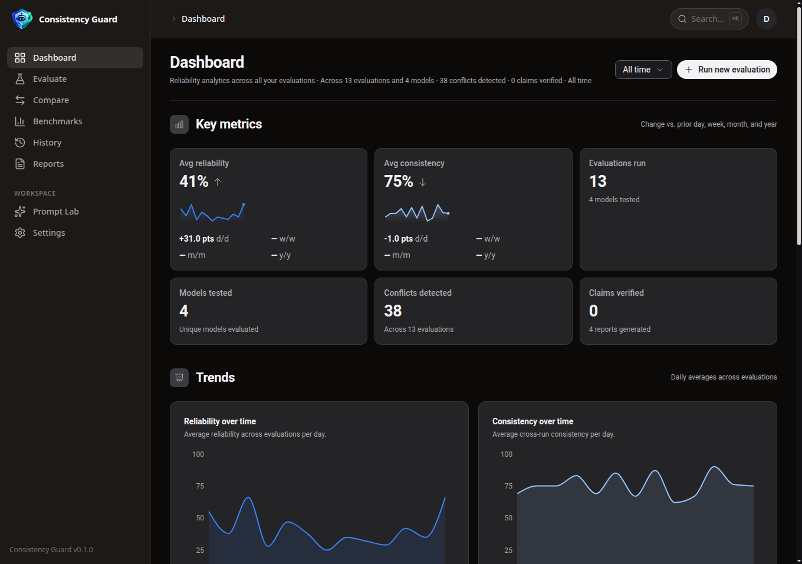
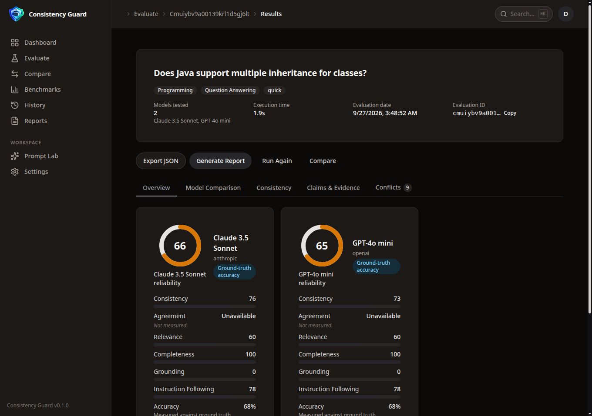
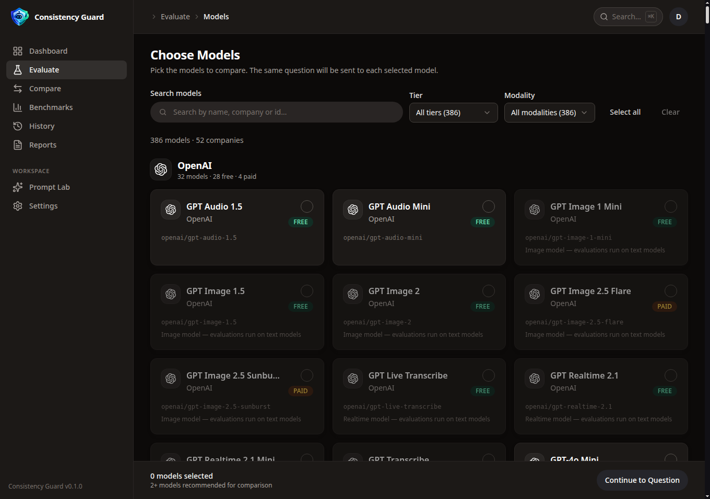

AI reliability evaluation
Can you trust this model’s answer?
Consistency Guard runs one question through several AI models, repeatedly, and measures what matters before you trust an answer: consistency across runs, agreement between models, conflicts, evidence support and uncertainty.
Create an account, add a free Pollinations key, and evaluate. Your keys are encrypted at rest and never leave the server unmasked.
Sample reliability score
One model, one question, scored across six dimensions.
Sample data showing the six-dimension breakdown.

How it works
How it works
One prompt in, one reliability score per model out. Everything else is detail you can inspect.
01
Ask once
Type a question and pick the models to test. A prompt analyzer and improver help you sharpen the question before you spend runs.
02
It runs across models
The same question goes to each model several times, through Pollinations, OpenAI, Anthropic, Gemini, Mistral and other providers.
03
One score per model
Each answer gets a reliability score with a per-dimension breakdown, shown side by side, so you compare numbers instead of impressions.
Scoring
Scoring you can audit
Every score is fixed, published arithmetic. The same input always gives the same score, and any result can be recomputed and checked.
S = 0.35 × TF-IDF + 0.30 × ROUGE-L + 0.25 × Jaccard + 0.10 × Levenshtein
The composite text similarity between two answers, built from four standard measures.
TF-IDF cosine, 0.35
Weighted word overlap. Words that carry meaning count more than common words.
ROUGE-L, 0.30
The longest sequence of words two answers share, in the same order.
Jaccard, 0.25
The share of words the two answers have in common.
Levenshtein, 0.10
How many small edits turn one answer into the other.
35%
Accuracy
Closeness to a reference answer, when you give one.
20%
Consistency
Agreement across repeated runs of the same question.
15%
Relevance
How much of the answer actually addresses the question.
10%
Completeness
Coverage of the points the question asks for.
10%
Grounding
Share of claims backed by retrieved evidence.
10%
Instruction following
Whether the answer respects the format and limits you set.
Accuracy is estimated against a reference answer when you provide one, or against agreement between models when you do not. Nothing here is a model grading its own output.
Modes
Four ways to test an answer
Pick the mode that matches the question. Each one runs your question through the selected models multiple times.
Quick
One run per model. A fast first check when you want a rough answer quickly.
Consistency
The same question asked several times, to catch answers that drift between runs.
Deep
More runs per model, with every factual claim extracted and checked one by one.
Adversarial
Paraphrased questions, distractors and conflicting instructions, to see whether the answer holds up under pressure.
Evidence
Claims, checked against evidence
An answer is not one thing. It is a set of claims, and each one can be right, wrong, or uncheckable.
Photosynthesis converts light energy into chemical energy.
SupportedReference: biology textbook, chapter on photosynthesis
The Eiffel Tower was completed in 1887.
ContradictedReference: completed in 1889, for the World’s Fair
As I mentioned earlier in this chat, the answer is simple.
UnverifiedNo reference covers claims about the conversation itself
Water boils at 100°C at sea level.
SupportedReference: standard physics tables
When no evidence is found, a claim stays unverified. The pipeline never invents grounding, and a claim with no supporting reference is never shown as supported.
The app
See it in action
The results page and model selection, from the app itself.


Screenshots from the app.
Results
Early results from live testing
The first runs of the platform on live models.
13
Evaluations
Full runs completed in the pilot.
64
Conflicts found
Contradictions between models, caught by the pipeline.
47%
Average reliability
Mean score across the pilot evaluations.
Pilot run under the earlier scoring configuration. The point is the conflicts it caught. Scoring is fully deterministic now.
Why deterministic
Why deterministic, not an LLM judge
A language model judging another model’s answer is not a measurement. It changes with the judge, the prompt and the day, and a model grading its own output is grading itself.
Consistency Guard scores with fixed, published arithmetic, so any result can be recomputed, inspected and argued with. That is the whole point of the tool.
Try it on a question you care about.
Ask it once, run it across models, and see which answer holds up.
Get started